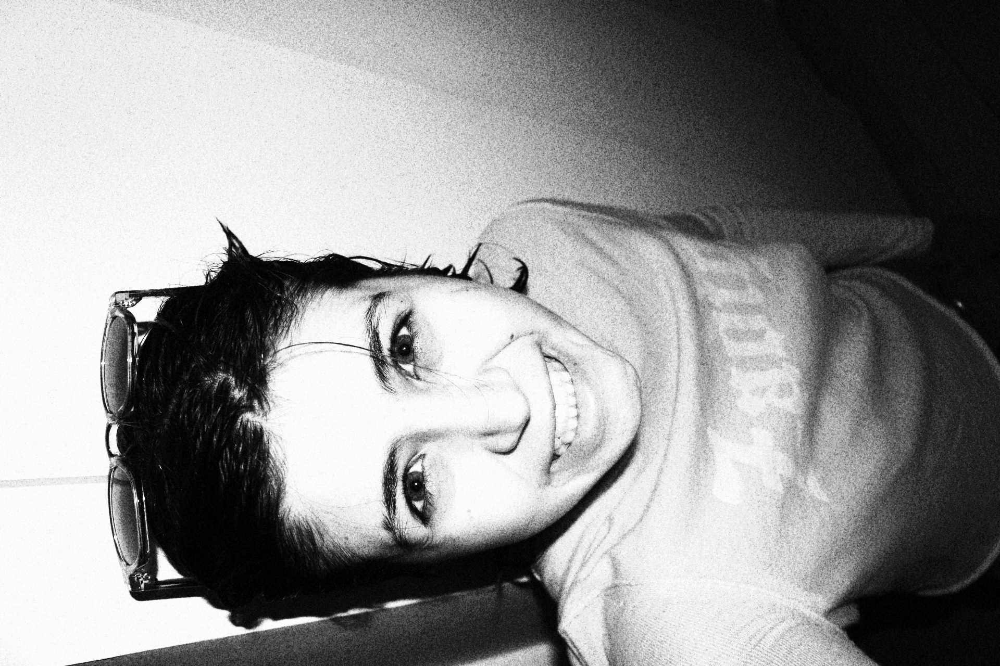

About Me
Welcome to my portfolio. My name is Brune, and I'm passionate about photography and nightlife. Whether it's chasing the light or leaning into the shadows and neon colors, that contrast is what drives my work.
I spent ten years living in the USA before recently moving to Paris to pursue my studies. French by nationality, fully fluent in English — I move between both worlds naturally.
I currently work at ANKALAB, the photography lab of the renowned ANKA, where I'm honing my craft — learning techniques, color grading, and how to adapt my settings to any lighting situation.
Right now I shoot with a Canon EOS 100D with an 18-55mm lens, and I'm working on the side to upgrade my gear. But honestly, the equipment is secondary — I'm willing to adapt to any style of photography. Just being there and capturing the moment is what thrills me. I'm determined to make this industry my own.
❯ I built this website by hand, do u like it? xd